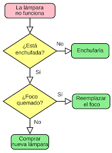
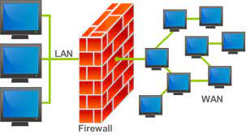

Algoritmo
Un conjunto de instrucciones o reglas lógicas diseñadas para realizar una tarea específica o resolver un problema. Los algoritmos son fundamentales en la programación y la informática en general.
Firewall
Un firewall es un sistema de seguridad que se utiliza para proteger una red de computadoras o un dispositivo contra amenazas externas, como intrusiones, virus o malware. Puede ser hardware o software y se encarga de filtrar el tráfico de red no autorizado.
Servidor
Un servidor es una computadora o sistema informático que proporciona servicios, recursos o datos a otras computadoras llamadas clientes a través de una red. Los servidores pueden ser servidores web, de correo electrónico, de archivos, entre otros.

Cifrado
El cifrado es el proceso de convertir información legible en un formato ilegible (texto cifrado) mediante el uso de algoritmos matemáticos y una clave, con el fin de proteger la confidencialidad de los datos durante la transmisión o el almacenamiento.
URL
Una URL es una dirección web que se utiliza para identificar recursos en internet. Contiene información sobre cómo acceder a un recurso específico, como una página web, un archivo o una imagen, a través de un navegador web. Por ejemplo, "https://www.ejemplo.com" es una URL que apunta a un sitio web específico.